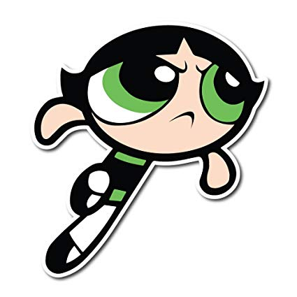

About Powepuff Girls
The girls were created by Professor Utonium in order to create perfect little girl using all nice things but he accidentally spilled Chemical X. That created three girls with three speical superpowers
Powerpuff Girls fighting against Mojo Jojo
Characteristics
- Blossom: Leader of Powerpuff Girls. Signature color is pink. Personality ingredient is everything nice Abilities are ice breath, microscopic vision, advanced inteligence
- Bubbles: The sweetest and softest. Signature color is blue. Personality ingredient is suger.Abilities are understanding languages, communicating with animals and supersonic waves
- Buttercup: Tough hotheaded tomboy. Signature color is green. Personality ingredient is spice. She doesn't have any unique superpowers but being able to curl her tongue 
Other Characters
Surrouded the girls are her family, friends, and of course, enemies. There is more information about them on the links below